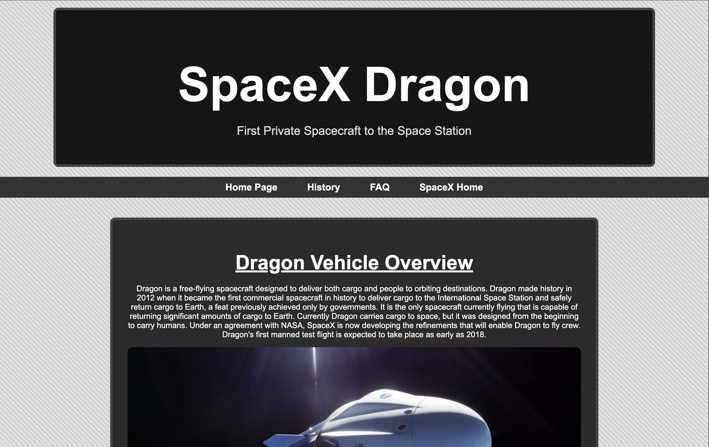
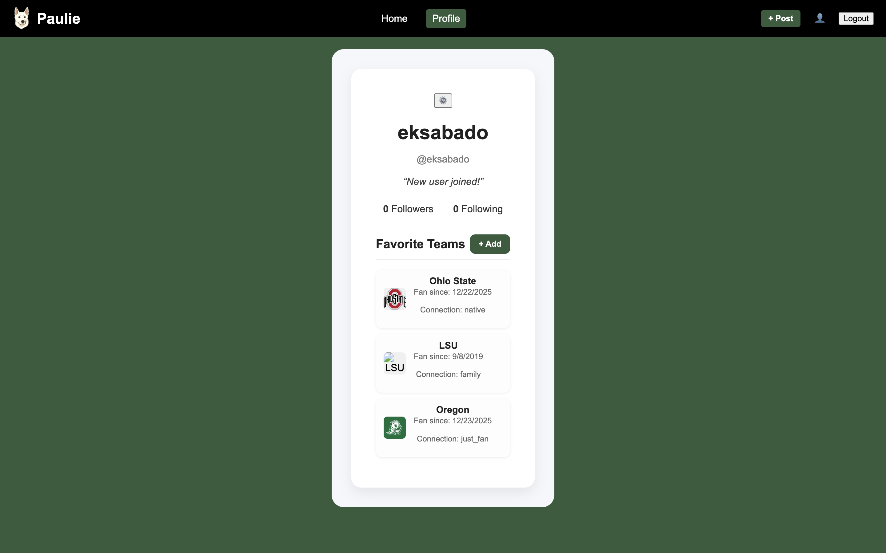

I have partaken in a good amount of Web Projects, from using frameworks such as React, Blazor, and even creating a Web Project with vanilla HTML, CSS, and JavaScript, I have a good amount of experience with Web Projects.
The entirety of the IFSC 1300 course I took, we spent learning about the elements of building websites and were tasked with a few projects to build a personal web page and ended the course with building a website hosted by GitHub as our Final Project for the course. For this final project we were tasked with building a small site that displayed information about a component of a rocketship used by SpaceX.
Link to the site: https://sabadoeli.github.io/IFCS-1310/

In my spare time, I started to piece together a project that I came up with an idea for and used React Framework to build it, while using Firebase as the database & authentication for the users.
GitHub Link: https://github.com/elijah-ks/the-paulie-app
